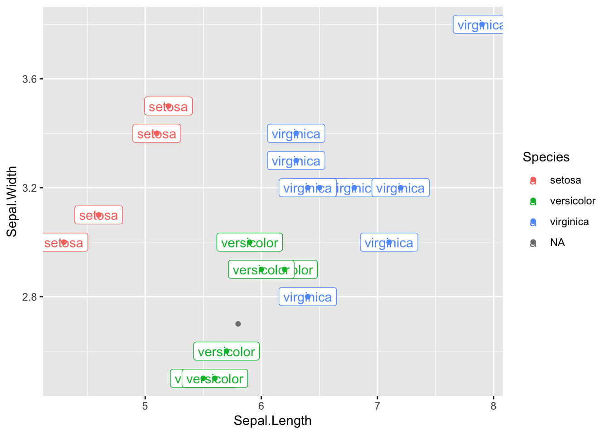
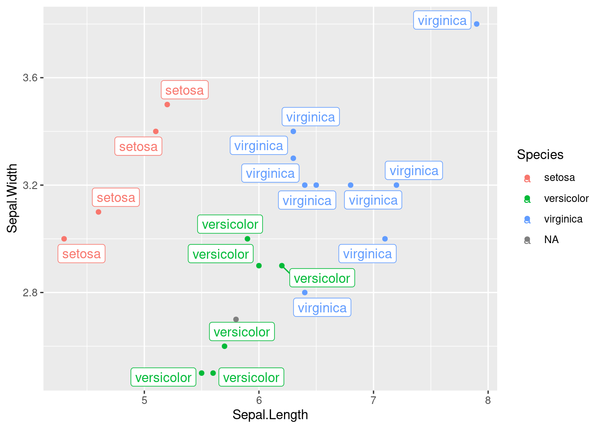
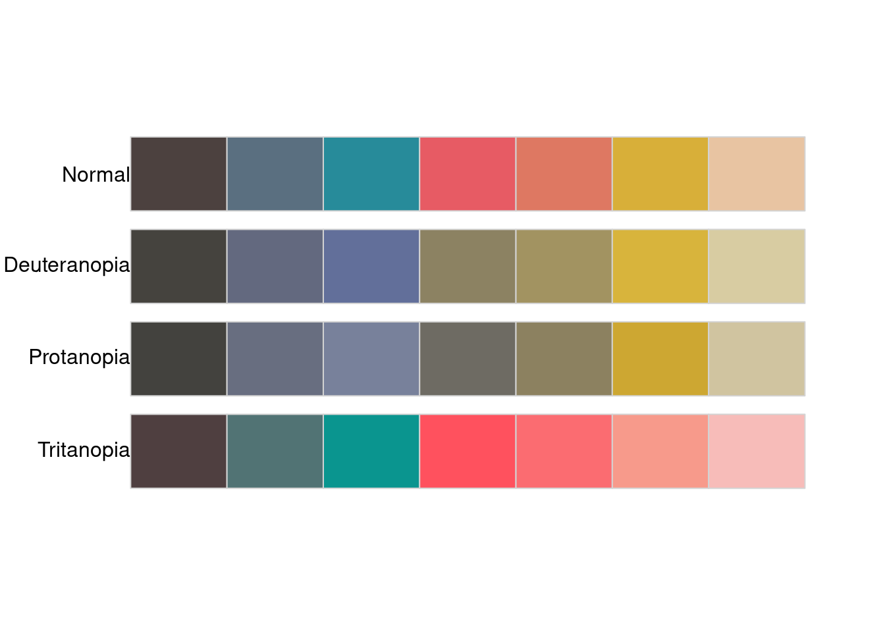

4.3 Packages - install and use
Think about sharing your code from the last few days. How would you share this with the other people in the course? Can they use it easily and flexibly to handle lots of different problems?
R, like other languages, is built on a package system - if you wrap up your code in particular expected ways and put it in particular expected places, it is very easy for others to get and use your code
Packages are said to be easy to make, from scratch. There’s more comprehensive instruction here. Personally, the author has never had cause to make one, but I can report that they’re very easy to use!
4.3.1 CRAN is the canonical R package resource
The Comprehensive R Archive Netowrk CRAN is an integral part of the R environment. This is a global and free resource for storing and distributing code as R packages - well documented and designed chunks of code.
You can install packages using the RStudio IDE, but it’s most important to know how to do it in R - what’s happening just under the hood.
Use library to load packages.
You should be able to load a package you’ve
already installed.
Call library() function, with an argument of the library name,
as a string.
For example:
Don’t have it? You can look for packages by using a search engine, or finding suggestions in the documentation, papers. Once you have a package name, use
to install it. You may need to select a “mirror”. This is just where you are downloading from, usually just go with “0-Cloud” 7.
What did this do? It retrieves and downloads the package’s code and documentation to what’s called your library. That’s a folder on your computer where the compiled versions of the packages are located, ready to be loaded when you want to use them.
Try it out.
Want to try it again? You can uninstall packages by removing them:
Each package has a page on CRAN with lots more information. The reference manual is a very specific reference document with per function level documentation. Vingettes are write ups that are more explaining how to do things - usually.
4.3.1.1 ggrepel
Sometimes points are way to close, and you can’t label them properly. For example,
## ── Attaching packages ───────────────────────────────────────────────────────────────────────────────────── tidyverse 1.3.0 ──## ✔ ggplot2 3.3.2 ✔ purrr 0.3.4
## ✔ tibble 3.0.4 ✔ dplyr 1.0.2
## ✔ tidyr 1.1.2 ✔ stringr 1.4.0
## ✔ readr 1.4.0 ✔ forcats 0.5.0## ── Conflicts ──────────────────────────────────────────────────────────────────────────────────────── tidyverse_conflicts() ──
## ✖ dplyr::filter() masks stats::filter()
## ✖ dplyr::lag() masks stats::lag()set.seed(1234) # this is just to get the same results each time we run
read_csv("data/iris.csv",col_types='nnnncc') %>%
slice_sample(n=20) %>%
ggplot()+
aes(x=Sepal.Length,y=Sepal.Width,col=Species,label=Species)+
geom_label()+
geom_point()## Warning: 4 parsing failures.
## row col expected actual file
## 44 Sepal.Length a number n/a 'data/iris.csv'
## 44 Sepal.Width a number n/a 'data/iris.csv'
## 148 Petal.Length a number n/a 'data/iris.csv'
## 148 Petal.Width a number n/a 'data/iris.csv'## Warning: Removed 1 rows containing missing values (geom_label).
The ggrepel library, from CRAN, is a handy way to achieve this:
library(ggrepel)
set.seed(1234) # this is just to get the same results each time we run
read_csv("data/iris.csv",col_types='nnnncc') %>%
slice_sample(n=20) %>%
ggplot()+
aes(x=Sepal.Length,y=Sepal.Width,col=Species,label=Species)+
geom_label_repel()+
geom_point()## Warning: 4 parsing failures.
## row col expected actual file
## 44 Sepal.Length a number n/a 'data/iris.csv'
## 44 Sepal.Width a number n/a 'data/iris.csv'
## 148 Petal.Length a number n/a 'data/iris.csv'
## 148 Petal.Width a number n/a 'data/iris.csv'## Warning: Removed 1 rows containing missing values (geom_label_repel).
4.3.2 Using packages without library()-ing them
Some packages you don’t really want to have to go through the trouble of
loading, you’ll just want one function.
For example, this website is generated with one function, render_book()
in the package bookdown. Instead of:
I can save a line by just using ::
This means I am looking in library bookdown for function render_book.
The function is hidden again right afterwards, but it is useful if you just
want to run one function from a library, once.
This is super handy when wanting to typeset (render) a Rmd file:
I never load the rmarkdown package, I just type the above. A lot.
8
4.3.3 Github is a common place for sharing packges in development
Installing from github requires some different programming - and there’s libraries with functions for this.
This used to be part of the devtools package, but the authors have been
“uncoupling” these to make each package simple and composable.
4.3.3.1 Let’s install a package off of github.
Here’s a cool Ghibli color palette, so you can change sets of colors for your plots. Try installing it with:
Then adapt one of your previous plots (that has colors) to use these new color palettes.
4.3.3.2 Let’s install another one, to check the previous
Colorblind folks can’t distinguish between certain colors so well. Designing figures so that colorblind folks can readily distinguish the relevant differences is a good idea. It makes for a better figure, just like increasing the font size and cleaning up distracting artifacts.
The ghibli package above has been claimed to be somewhat good for
plotting for universal visibility. Is that true?
Let’s install this package to check:
Then

## name n tolerance ncp ndcp min_dist mean_dist max_dist
## 1 normal 7 9.939857 21 21 9.939857 36.11891 59.92427
## 2 deuteranopia 7 9.939857 21 19 7.044647 30.14324 52.02502
## 3 protanopia 7 9.939857 21 20 8.068943 26.94418 50.93756
## 4 tritanopia 7 9.939857 21 20 4.587519 35.34529 60.29190Other packages on there:
- Sports field plotting
- Ridgeplots in ggplot2
- what else?
4.3.5 What packages do you have already?
You have a few. Here’s a list:
But which are loaded?
The packages are in a directory, the location is stored in this:
I’m not running that one, as it’ll be different for each user.
4.3.6 Major problems with package installations
Somethings can go wrong. You’ll want to pay attention to what is output from the installation attempt. Look for errors. Scroll up to find warnings and errors.
These can arise from multiple ways. Here’s a few ideas:
- the package name you put in is misspelled
- the package is in another repo (CRAN, Bioconductor, etc)
- your internet is down (this is more of a Stanford WiFi problem)
- your R package library directory is not writable (you don’t have permission)
- the package is not available for this version of R
- the package relies on the system having programs or software or libraries installed that are not installed (less of a problem with RStudio)
- the package actually has a bug
Let’s next talk about how to find help for problems.
Licensed Creative Commons Attribution-NonCommercial-ShareAlike 4.0